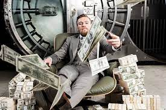

Para mi MMA es el deporte de mas disciplina que existe ya que yo siempre he tenido la filosofia de que los
deportes de contacto son los mas dificiles y los que requieren mas entreno de todos. es una combinacion de artes
marciales que se torna en una hermosa disciplina.
MMA RESUMEN
Investigación
19/11/2022
Biografia Luchadores
1.-Conor Anthony McGregor (Dublín, Irlanda; 14 de julio de 1988) es un luchador irlandés de artes marciales mixtas que actualmente compite en las categorías de peso ligero y peso wélter de UFC . McGregor fue el primer luchador de la historia en ser doble campeón de UFC, ostentando el cinturón de peso ligero y peso pluma.
McGregor fue el primer luchador en la historia de la UFC en ostentar títulos en dos divisiones distintas al mismo tiempo. Uno de esos cinturones se lo arrebató a José Aldo en 13 segundos de acción, logrando de esta forma el KO más rápido en la historia de las peleas por un título de UFC. El segundo cinturón lo obtuvo derrotando por Nocaut técnico a Eddie Alvarez en UFC 205. También se convirtió en campeón de peso pluma y ligero de manera simultánea en la liga británica de MMA Cage Warriors.
El luchador de origen irlandés también ha competido en boxeo en la categoría de peso Superwélter. Fue derrotado por Floyd Mayweather Jr. en su debut en 2017. Wikipedia
2.-Daniel Jeffery "Dan" Henderson (nacido el 24 de agosto de 1970) es un peleador retirado estadounidense de artes marciales mixtas y exluchador olímpico. Fue el último campeón de peso semipesado de Strikeforce, el último campeón de PRIDE de peso wélter (183 libras) y peso medio (205 libras). Es el primer artista marcial mixto en mantener simultáneamente dos títulos en dos categorías de peso en una promoción de MMA. Henderson es también el ganador del torneo de peso medio de UFC 17, campeón del torneo de Brasil Open 1997 de peso ligero, campeón del torneo de RINGS King of Kings 1999, y campeón del Grand Prix peso wélter de PRIDE de 2005.
Henderson es conocido por tener un poder de nocaut extremadamente devastador en la mano derecha. Henderson debutó en UFC en 1998, derrotando a Allan Goes y Carlos Newton en UFC 17 para ganar el torneo de peso medio.
Henderson volvió a UFC en el 2007, enfrentándose a Quinton Jackson en UFC 75 por los campeonatos de Peso Semipesado de UFC de Jackson, y Peso Medio de PRIDE de Henderson. Jackson derrotó a Henderson por decisión unánime, unificando así los dos títulos.
Henderson se enfrentó a Anderson Silva en UFC 82 por los campeonatos de Peso Medio de UFC de Silva, y Peso Wélter de PRIDE de Henderson. Silva derrotó a Henderson a través de una estrangulación por la espalda en la segunda ronda.
En UFC 88, Henderson derrotó a Rousimar Palhares por decisión unánime.
Henderson se enfrentó a Rich Franklin en UFC 93. Henderson derrotó a Franklin por decisión dividida.
En UFC 100, Henderson se enfrentó a Michael Bisping. Henderson derrotó a Bisping con un brutal KO en la segunda ronda. Tras el evento, Henderson obtuvo el premio al KO de la Noche y finalmente obtuvo el KO del Año de 2009. MMA
3.-Phillip Jack «Phil» Brooks (Chicago, 26 de octubre de 1978), conocido por su seudónimo CM Punk (abreviación de Chicago Made Punk),es un luchador profesional, actor y expeleador de artes marciales mixtas estadounidense. Es más conocido por su trabajo en la WWE. La WWE lo ha considerado como el segundo «Campeón de la WWE con el más largo reinado de la era moderna» al haber ostentado el título durante 434 días desde el 20 de noviembre de 2011 al 27 de enero de 2013. Punk es reconocido oficialmente como el octavo Campeón de la WWE con el reinado más largo de su historia.
Ha sido nueve veces Campeón Mundial, tras haber conseguido un reinado como Campeón Mundial de ROH, dos como Campeón Mundial de AEW, uno como Campeón Mundial de la ECW, tres como Campeón Mundial Peso Pesado y dos como Campeón de la WWE, siendo junto con Kane y Big Show el segundo luchador en conseguir los tres títulos mundiales de la WWE.Además, posee un reinado como Campeón Intercontinental y otro como Campeón Mundial en Parejas con Kofi Kingston, lo que lo convierte en Campeón Tres Coronas; además, ganó en dos ocasiones el maletín de Money in the Bank en WrestleMania XXIV y WrestleMania XXV, así como también el Elimination Chamber 2012.
Es reconocido por seguir durante toda su carrera un estilo de vida straight edge, que consiste en la abstención de bebidas alcohólicas, cigarrillos y otras drogas recreativas, ideología que adhiere tanto en su gimmick como en su vida personal. WWE
Millones de dolares
entre 50 a 100
entre 10 a 20
Torneos en Mexico
3/feb/2023
Como Son?
Los torneos amateur de MMA en México son una experiencia única y emocionante para aquellos que están interesados en el deporte. Son una oportunidad para los jóvenes luchadores de mostrar sus habilidades y mejorar en un ambiente competitivo. Con una gran cantidad de talento en el país, estos torneos son un lugar para que los luchadores compitan contra otros de igual nivel y ganen experiencia valiosa en el ring.
Los combates son intensos y llenos de acción, con cada luchador tratando de impresionar al público y a los jueces con sus habilidades. La camaradería entre los competidores es fuerte y estos eventos son una muestra de la unidad y el respeto que existe en el deporte. Además, los torneos amateur de MMA atraen a una gran cantidad de fans y patrocinadores, lo que los convierte en una experiencia emocionante para todos los involucrados.
Estos eventos también son una excelente oportunidad para que los luchadores mejoren su técnica y estrategia, ya que tienen la oportunidad de ver cómo otros luchadores compiten y adaptar sus propios estilos para ser más efectivos en el ring. Además, los torneos amateur de MMA en México son una muestra del creciente interés en este deporte en el país, y sin duda serán una parte integral de su desarrollo y crecimiento en el futuro.
En conclusión, los torneos amateur de MMA en México son una experiencia emocionante y valiosa para los luchadores, los fans y los patrocinadores. Ofrecen una oportunidad para ver el talento emergente y ayudar a formar a los futuros campeones del deporte.
Torneo de mma en Mexico
Ingresos MMA
3/feb/2023
¿Cuanto se gana en la MMA?
El MMA, o artes marciales mixtas, es un deporte en auge que ha ganado una gran popularidad en los últimos años. Muchos luchadores de MMA han logrado ganar una fortuna a través de su carrera, gracias a los altos ingresos que pueden generar los combates y los patrocinios.
Los ingresos de los luchadores de MMA dependen de muchos factores, como su popularidad, su rendimiento en el octágono, y su presencia en los medios de comunicación. Los luchadores más exitosos y populares pueden ganar millones de dólares por combate, y también pueden obtener ingresos adicionales a través de patrocinios y apariciones públicas.
Además, los luchadores de MMA también pueden generar ingresos a través de otras fuentes, como el entrenamiento personal, la enseñanza de artes marciales, y la creación de contenido para plataformas en línea. Estos ingresos adicionales pueden ayudar a los luchadores a mantenerse financiariamente estables y a prepararse para su jubilación.
Sin embargo, es importante tener en cuenta que el camino hacia el éxito en el MMA es difícil y requiere mucho esfuerzo y dedicación. Muchos luchadores nunca logran alcanzar el nivel de popularidad y éxito que les permita generar ingresos significativos, y deben trabajar duro y sacrificar mucho para lograr sus objetivos.
En conclusión, el MMA es un deporte que puede ofrecer a los luchadores la oportunidad de ganar una fortuna, pero también requiere mucho trabajo y sacrificio para lograr el éxito. Si estás interesado en la lucha de MMA, es importante tener en cuenta estos factores y trabajar duro para lograr tus metas.

Connor Mcgregor es de los mas ricos
Top
04/10/22
Los 10 Mejores peleadores de MMA
Anderson Silva
KHABIB NURMAGOMEDOV
DANIEL CORMIER
ESTÍPITE MIOCIC
FEDOR EMELIANENKO
AMANDA NUNES
DEMETRIO JOHNSON
JOSÉ ALDO
CONOR MCGREGOR
MAX HOLLOWAY
La mayoria de estos peleadores empezaron desde cero sin muchos recursos economicos.
 MMA
MMA